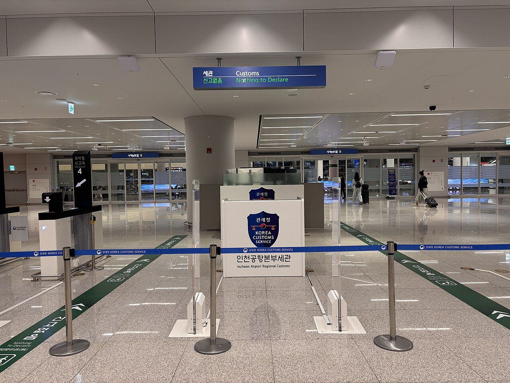
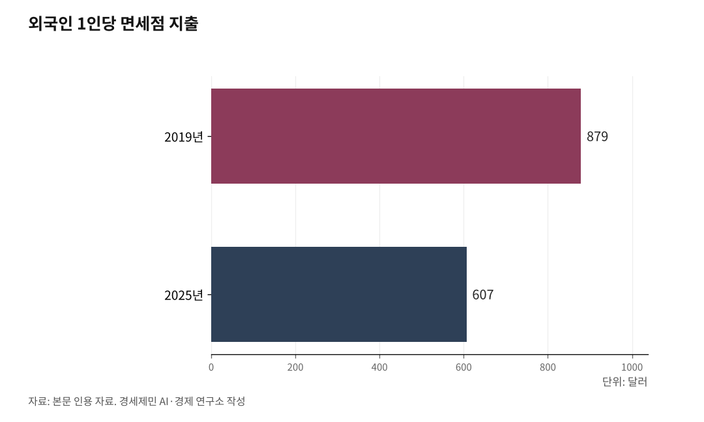

'세계 3위' 인천공항이 키워야 할 고부가가치 핵심 두 개
여객은 입국 소비, 화물은 반도체 수출… 인천이 쥔 두 고부가가치
순위를 가치로 착각하면 착시… 경쟁자는 걸프·중국 아닌 일본
AI경세제민=김갑봉 기자 | 인천국제공항이 2025년 국제선 여객 세계 3위에 올랐다. 두바이와 런던 히스로 다음이다. 인천국제공항공사는 여객과 화물, 시설이 모두 정상권이라고 밝혔다.

비행기가 싣는 것은 여객과 화물 둘뿐이다. 둘 다 고부가가치다. 활성화는 이 둘을 키우는 일이다.
비행기는 여객과 화물을 싣는다
공항이 실어나르는 것은 여객과 화물이다. 관문과 환승, 연계 수송망, 배후단지는 이 둘을 키우는 수단이다. 여객은 입국해 국내에서 돈을 쓴다. 화물은 한국의 비싼 수출품을 나른다.
이 둘이 만드는 값은 크다. 인천공항의 생산유발효과는 2024년 67조원으로 국내총생산(GDP)의 2.6%다. 인천 지역만 보면 48조원으로 지역내총생산(GRDP)의 39%다. 여객과 화물을 나르는 일이 인천 경제의 뿌리다.
둘 사이에는 차례가 있다. 여객이 먼저고 화물이 그다음이다. 여객 노선이 두꺼워야 그 여객기 아래 화물칸에 화물이 실린다. 여객이 화물의 토대다.

인천 국제여객 세계 3위, 최고 부가가치
여객은 공항이 버는 돈의 토대다. 인천공항 수입의 65%가 비항공수익이고, 대부분이 면세점과 상업시설 매출이다. 그 매출을 입국하고 출국하는 여객이 만든다. 인천은 그 여객에서 정상권에 올랐다. 2025년 여객은 7407만1475명으로 개항 이래 최대다. 국제선 여객 기준 두바이와 런던 히스로에 이어 세계 3위다.
동력은 한국행 입국 수요다. 방한 외래관광객은 2019년 1750만명에서 코로나19로 2021년 97만명까지 무너졌다. 2024년 1637만명으로 돌아왔고, 2025년 1850만명을 넘어 역대 최대를 경신했다.
손님은 돌아왔지만 지갑은 얇아졌다. 2019년과 견줘 외래관광객 1인당 지출은 177달러(약 25만원) 줄었다. 면세점 외국인 1인당 지출은 2019년 879달러(약 125만원)에서 2025년 607달러(약 86만원)로 내려갔다. 면세점 매출도 2025년 1~10월 10조4178억원으로 전년보다 16% 줄었다.
원·달러 환율이 2019년 1166원에서 2025년 1422원으로 22% 오르면서 한국이 가성비 여행지가 됐다. 손님은 늘었지만 달러로 환산한 씀씀이는 줄었다. 쇼핑을 주요 활동으로 꼽은 방한객 비율도 2019년 92.5%에서 2024년 80.2%로 떨어졌다.
매출이 부진하자 호텔신라와 신세계면세점은 인천공항 사업권을 반납했다. 양은 사상 최대인데 1인당 부가가치는 정체했다. 키울 것은 머릿수가 아니라 1인당 부가가치다.
화물은 반도체·바이오 수출 관문
화물도 고부가가치다. 항공이 한국 수출에서 차지하는 물량은 1%에도 못 미친다. 금액으로는 약 30%다(2017년 기준). 적은 물량으로 큰 값을 나른다.
그 값을 만드는 게 반도체다. 2025년 11월 항공 수출액의 47.5%가 메모리반도체였다. 반도체는 습도와 진동에 약해 배로 옮기기 어렵다. 항공이 사실상 유일한 운송수단이다. 반도체는 한국 전체 수출의 24.4%를 차지하는 1위 품목이다.
그 1위 품목이 비행기로 나간다. 냉장이 필요한 바이오의약품도 마찬가지다. 2025년 전국 항공화물은 446만8752톤으로 전년보다 1.7% 늘었다. 인천공항 국제화물은 2024년 290만톤으로 세계 3위였고, 한국 항공화물 대부분을 처리한다. 반도체 수출이 늘면 항공화물도 늘고, 그 관문을 인천이 쥔다.
잣대 바꾸면 3·6·13위, 순위의 착시
순위는 잣대에 따라 달라진다. 인천의 세계 3위는 국제선 여객 한 부문 순위다. 같은 국제공항협의회(ACI) 자료라도 잣대를 바꾸면 흔들린다.
화물을 보자. 공사는 국제화물 세계 3위라 밝혔다. 우편을 뺀 직접 화물과 환적 화물 기준이다. 국내 화물까지 더한 전체 화물에서는 2024년 6위였다. 2025년 1·2·3위는 홍콩과 상하이 푸둥, 앵커리지다.
전체 여객은 더 낮다. 국내선까지 더하면 2024년 13위다. 국내선 정기편이 사실상 없는 순수 국제 관문이기 때문이다.
2025년 세계 국제여객은 40억명으로 사상 최대다. 상위 10개 공항이 국제여객의 17%를 처리한다. 인천이 그 상위권에 있다. 같은 공항도 3위와 6위, 13위로 갈린다. 순위는 목표가 아니라 결과다. 순위를 좇으면 착시에 빠진다.
경쟁자는 걸프도 중국도 아닌 일본
경쟁자를 잘못 짚으면 전략도 틀린다. 도하는 환승객 비중이 4분의 3, 두바이도 절반에 가깝다. 자국 수요가 얇은 사막 도시가 대륙 간 환승으로 먹고산다. 모델이 다르니 인천의 경쟁자가 아니다. 중국은 자국 수요로 도는 국가 관문이다.
인천과 닮은 곳은 일본이다. 두터운 자국 수요 위에 국제 여객을 키운다. 2025년 도쿄 하네다가 전체 여객 세계 3위에 올랐다. 애틀랜타 1억630만명, 두바이 9520만명에 이어 9170만명을 기록했다. 자국 수요가 그 힘이다.
다만 나리타·하네다의 국제선 환승률은 공식 수치로 확인되지 않는다. 구조로 보면 두 공항으로 갈려 환승 결집이 약하다. 동북아에서 유럽과 미주로 가는 환승에 빈자리가 있다. 같은 동북아 손님을 두고 인천과 일본이 다툰다. 그 빈자리가 인천의 기회다.
인천은 여객과 화물 두 고부가가치에서 정상권에 올랐다. 정부도 두 물동량을 늘리는 쪽으로 움직였다. 양국은 5월 27일 항공회담에서 운수권을 주 70회 늘리기로 했고, 국토교통부가 6월 4일 발표했다. 여객 56회, 화물 14회로 2019년 이후 7년 만이다. 인천-상하이와 광저우 운수권이 주 7회씩 늘었고, 중국 화물허브를 잇는 화물편도 늘었다. 다만 운수권은 그릇이다. 그릇을 부가가치로 채우는 일이 활성화다. 이제 순위가 아니라 부가가치를 키울 차례다. 그 길은 다음 회에서 짚는다.
참고문헌
국토교통부, "7년 만에 한-중 운수권 확대" 보도자료, 2026.6.4.
인천국제공항공사, "2025년 항공운송실적" 보도자료, 2026.1.
인천국제공항공사, "개항 25주년 경제효과(생산유발 67조원)" 보도자료, 2026.3.27.
국제공항협의회(ACI), "2025년 세계 공항 순위", 2026.4.14., https://aci.aero/2026/04/14/worlds-busiest-airports-revealed-in-latest-global-rankings/
국토교통부 항공정보포털시스템, "2025년 항공화물·품목별 수출 실적", 2026.2.
머니투데이, "반도체 역대 최대 수출에 하늘길도 활짝", 2026.2.10.
브릿지경제, "인천공항 면세점 임차료 조정 불가", 2025.7.4.
서울경제, "역대급 방한에도 좀처럼 열지 않은 지갑", 2025.12.30.
카고뉴스, "작년 인천공항 항공화물 세계 6위", 2025.4.
사진 출처
· [대표사진] Choikwangmo25, "2025-10-22 06.09.10 Incheon Airport Regional Customs.jpg", 위키미디어 공용, CC0, https://commons.wikimedia.org/wiki/File:2025-10-22_06.09.10_Incheon_Airport_Regional_Customs.jpg
※ 이 기사는 인공지능을 활용해 작성했습니다. 사실관계는 저자가 확인했습니다.
관련기사
- 세계 3위 인천공항, 크기로는 못 이긴다… 채움과 환승, 부가가치가 길이다
- [세계3위 인천공항미래②] 세계 3위에 취하면 골든타임 놓친다
- 세계 3위 인천공항, 머릿수를 넘어 1인당 부가가치까지… 고객은 항공사가 먼저다
- [세계3위 인천공항미래④] 환승은 강한 관문 위에서만 두꺼워진다
저작권자 © AI경세제민 무단전재 및 재배포, AI학습 및 활용 금지